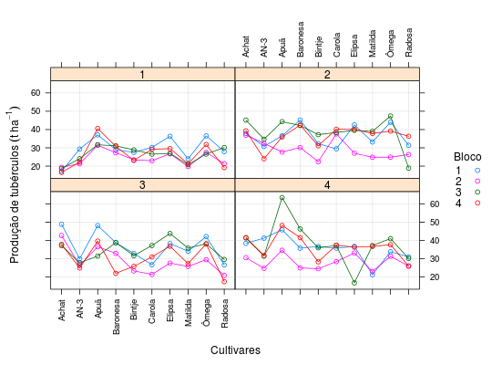

Dados referentes a um grupo de 4 ensaios de competição de 10 cultivares de batata, realizado por Filgueira (1991) em Guaíra - SP. Os ensaios foram instalados no delineamento de blocos casualizados com 4 repetições. A variável resposta é a produção de tubérculos, em t ha\(^{-1}\).
Um data.frame com 160 observações e 4 variáveis, em
que
experblococultprodBANZATTO; KRONKA (2013), Quadro 8.2.1, pág. 190.
Filgueira, F. A. R. (1991). Interação genótipo ambiente em batata (Solanum tuberosum L. spp tuberosum). Tese (Doutorado em Produção Vegetal). Faculdade de Ciências Agrárias e Veterinárias, Universidade Estadual Paulista, Jaboticabal: SP.
library(lattice) data(BanzattoQd8.2.1)#> Warning: data set ‘BanzattoQd8.2.1’ not foundstr(BanzattoQd8.2.1)#> 'data.frame': 160 obs. of 4 variables: #> $ exper: Factor w/ 4 levels "1","2","3","4": 1 1 1 1 1 1 1 1 1 1 ... #> $ bloco: Factor w/ 4 levels "1","2","3","4": 1 1 1 1 1 1 1 1 1 1 ... #> $ cult : Factor w/ 10 levels "Achat","AN-3",..: 1 2 3 4 5 6 7 8 9 10 ... #> $ prod : num 17.2 29.3 37.1 29 27.5 ...ftable(xtabs(~exper + bloco + cult, data = BanzattoQd8.2.1))#> cult Achat AN-3 Apuã Baronesa Bintje Carola Elipsa Matilda Ômega Radosa #> exper bloco #> 1 1 1 1 1 1 1 1 1 1 1 1 #> 2 1 1 1 1 1 1 1 1 1 1 #> 3 1 1 1 1 1 1 1 1 1 1 #> 4 1 1 1 1 1 1 1 1 1 1 #> 2 1 1 1 1 1 1 1 1 1 1 1 #> 2 1 1 1 1 1 1 1 1 1 1 #> 3 1 1 1 1 1 1 1 1 1 1 #> 4 1 1 1 1 1 1 1 1 1 1 #> 3 1 1 1 1 1 1 1 1 1 1 1 #> 2 1 1 1 1 1 1 1 1 1 1 #> 3 1 1 1 1 1 1 1 1 1 1 #> 4 1 1 1 1 1 1 1 1 1 1 #> 4 1 1 1 1 1 1 1 1 1 1 1 #> 2 1 1 1 1 1 1 1 1 1 1 #> 3 1 1 1 1 1 1 1 1 1 1 #> 4 1 1 1 1 1 1 1 1 1 1with(BanzattoQd8.2.1, addmargins(tapply(prod, list(cult, exper), FUN = mean)))#> 1 2 3 4 Sum #> Achat 17.9850 39.8250 41.6250 37.9600 137.3950 #> AN-3 24.2150 30.4850 27.2275 32.2825 114.2100 #> Apuã 35.1975 36.1225 38.9250 48.0050 158.2500 #> Baronesa 29.5525 40.0025 33.1175 37.1400 139.8125 #> Bintje 25.7525 30.7675 28.4050 31.3750 116.3000 #> Carola 27.2425 36.4025 29.0800 34.6975 127.4225 #> Elipsa 29.8800 37.3175 36.6000 30.7425 134.5400 #> Matilda 21.4525 33.7375 30.7325 29.5475 115.4700 #> Ômega 30.6125 38.8700 36.9300 35.9275 142.3400 #> Radosa 24.6725 28.2400 23.6075 28.2675 104.7875 #> Sum 266.5625 351.7700 326.2500 345.9450 1290.5275xyplot(prod ~ cult | exper, data = BanzattoQd8.2.1, groups = bloco, type = c("p", "a", "g"), as.table = TRUE, auto.key = list(space = "right", title = "Bloco", cex.title = 1, columns = 1), scales = list(x = list(rot = 90)), xlab = "Cultivares", ylab = expression("Produção de tubérculos"~(t~ha^{-1})))